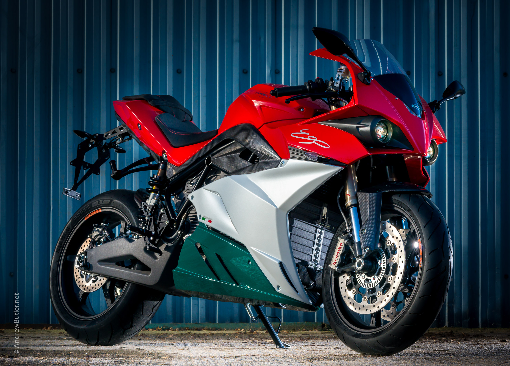

| Historia |
Creacion | Evolucion |
Origen Y Avances |
Curiosidades |
Datos |
Empresas |
Modelos |
Formulario |
Galeria |
La motocicleta ha recorrido un largo camino desde sus orígenes hasta convertirse en una máquina moderna y sofisticada. A lo largo del siglo XX, marcas como Harley-Davidson, Indian, BMW y Honda han revolucionado el mundo del motociclismo, introduciendo avances tecnológicos y diseños innovadores que cambiaron para siempre la forma de moverse.
Durante las guerras mundiales, las motocicletas fueron utilizadas por los ejércitos como vehículos de transporte rápido y confiable. A partir de los años 50, se convirtieron en símbolos de libertad y rebeldía, gracias a su popularización en el cine y la cultura juvenil.
"

Hoy en día, las motocicletas no solo son un medio de transporte eficiente, sino también una pasión para millones de personas en todo el mundo. Ya sea en carreras profesionales, viajes de aventura o simplemente como estilo de vida, las motos siguen inspirando libertad y emoción.